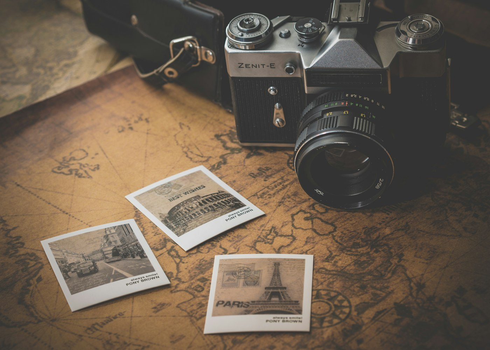

Casamentos
O dia inteiro em pequenos instantes.
FOTOGRAFIA COM OLHAR AUTORAL
Fotografia de pessoas, encontros e momentos que você vai querer revisitar.
Por dentro
Imagens ilustrativas do universo deste projeto.


Nossa essência
O Frame Studio trabalha com direção leve e atenção ao que acontece entre as poses. O resultado é uma coleção de imagens que tem a sua verdade.
O que fazemos
Conheça as opções e escolha o que faz sentido para você.
O dia inteiro em pequenos instantes.
Retratos com espaço para ser você.
Afeto que atravessa o tempo.
Imagens que apresentam sua marca.
A energia de cada encontro.
Como funciona
Entendemos o que você imagina.
Luz, local e roteiro com leveza.
Você vive, nós registramos.
Em destaque
Presença discreta para registrar tudo.
Um encontro leve com a câmera.
Retratos para mostrar quem você é.
Quem viveu, recomenda
“As fotos parecem exatamente com a gente. Foi uma experiência leve do começo ao fim.”
Helena e João, clientes
Antes de começar
Sim, avaliamos deslocamentos para outras cidades.
O prazo varia por projeto e fica definido na proposta.
Vamos conversar
Deixe seus dados para simular o contato ou fale agora com nossa equipe.
Conversar no WhatsApp ↗